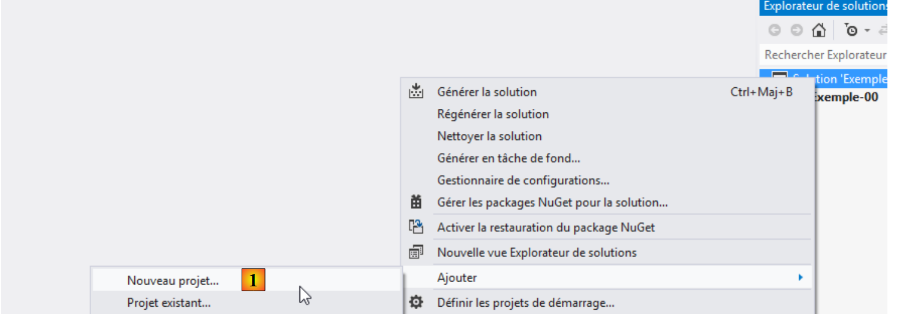
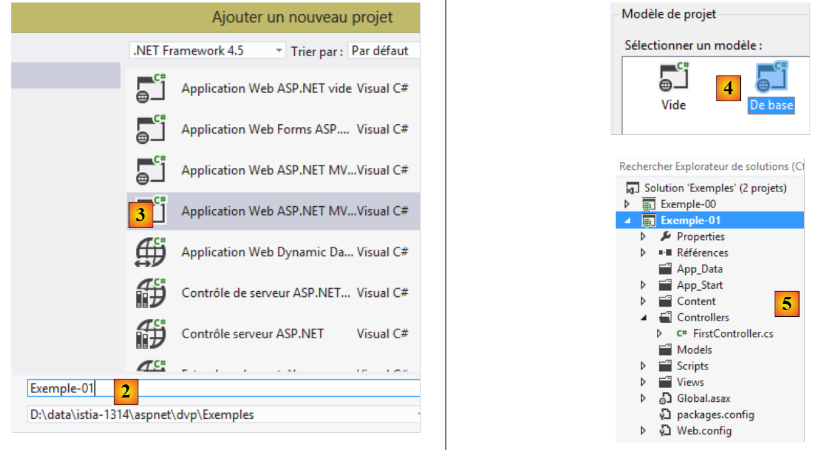
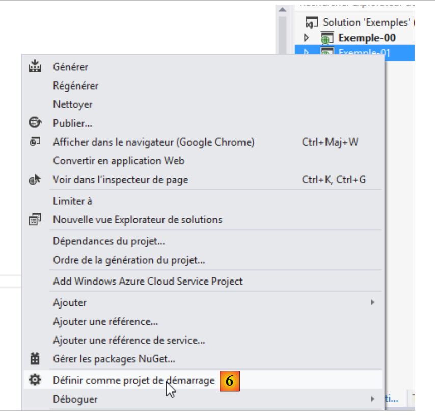
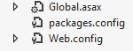
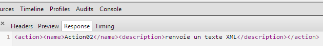
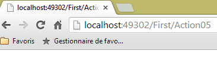
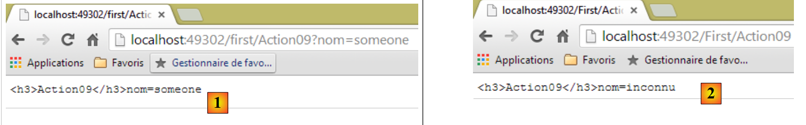

3. Controllers, Actions, Routing
Let’s consider the architecture of an ASP.NET MVC application:
 |
In this chapter, we examine the process that routes the request [1] to the controller and the action [2a] that will process it, a mechanism known as routing. We also present the various responses [3] that an action can return to the browser. This may be something other than a view V [4b].
3.1. The Structure of an ASP.NET MVC Project
Let’s build our first ASP.NET MVC project using Visual Studio Express 2012. We’ll add it [1] to the solution used in the previous chapter:
 |
 |
- in [2], the name of the new project;
- in [3, 4], we choose a basic ASP.NET MVC project. This template provides us with an empty web application that nevertheless includes all the resources (DLLs, JavaScript libraries, etc.) needed to get started.
The resulting project is shown in [5]. We will make it [6] the starter project of the solution:
 |
Note the following points in [5]:
- the project architecture reflects its MVC model:
- C controllers will be placed in the [Controllers] folder,
- M data models will be placed in the [Models] folder,
- V views will be placed in the [Views] folder,
 |
- in [1], the [Site.css] file will be the application's default CSS file;
- in [2], a number of JavaScript libraries are available;
- in [3], there are three specific views: _ViewStart, _Layout, and Error.
The [_ViewStart] file is as follows:
@{
Layout = "~/Views/Shared/_Layout.cshtml";
}
- Line 1: The @ character marks the start of a C# block within the view. Indeed, C# code can be included in a view;
- line 2: defines a Layout variable that specifies the parent view for all views. It corresponds to the master page in the classic ASP.NET framework.
The file [ _Layout ] is as follows:
<!DOCTYPE html>
<html>
<head>
<meta charset="utf-8" />
<meta name="viewport" content="width=device-width" />
<title>@ViewBag.Title</title>
@Styles.Render("~/Content/css")
@Scripts.Render("~/bundles/modernizr")
</head>
<body>
@RenderBody()
@Scripts.Render("~/bundles/jquery")
@RenderSection("scripts", required: false)
</body>
</html>
When a view from the [Views] folder is rendered, its body will be rendered by line 11 above. This means that the view does not need to include the <html>, <head>, and <body> tags. These are provided by the file above. For now, this file is quite cryptic. Let’s simplify it:
<!DOCTYPE html>
<html>
<head>
<meta charset="utf-8" />
<meta name="viewport" content="width=device-width" />
<title>Tutoriel ASP.NET MVC</title>
</head>
<body>
<h2>Tutoriel ASP.NET MVC</h2>
@RenderBody()
</body>
</html>
- line 6: the title common to all views;
- line 9: the header common to all views;
- line 10: the content specific to the displayed view.

- [Web.config] is the web application's configuration file. It is complex. You will need to modify it when using the [Spring.net] framework in a multi-tier architecture.
- [Global.asax] contains the code executed when the application starts. Generally, this code utilizes the application’s various configuration files, including [Web.config].
3.2. Default URL routing
The code in [Global.asax] is currently as follows:
using System.Web.Http;
using System.Web.Mvc;
using System.Web.Optimization;
using System.Web.Routing;
namespace Exemple_01
{
public class MvcApplication : System.Web.HttpApplication
{
protected void Application_Start()
{
...
}
}
}
- Line 6: the class namespace. It is derived directly from the project name and is listed in the project properties:

 |
We set [1] as the default namespace. It is then used by default for all classes that will be created in the project.
Let’s return to the code in [Global.asax]:
using System.Web.Http;
using System.Web.Mvc;
using System.Web.Optimization;
using System.Web.Routing;
namespace Exemple_01
{
public class MvcApplication : System.Web.HttpApplication
{
protected void Application_Start()
{
...
}
}
}
- line 9: the [MvcApplication] class derives from the [HttpApplication] class. The name [MvcApplication] can be changed;
- line 11: The [Application_Start] method is the method executed when the web application starts. It is executed only once. This is where the application is initialized.
The code for [Application_Start] is currently as follows:
protected void Application_Start()
{
AreaRegistration.RegisterAllAreas();
WebApiConfig.Register(GlobalConfiguration.Configuration);
FilterConfig.RegisterGlobalFilters(GlobalFilters.Filters);
RouteConfig.RegisterRoutes(RouteTable.Routes);
BundleConfig.RegisterBundles(BundleTable.Bundles);
}
For now, you don’t need to understand all of this code. Lines 5–8 define the routes accepted by the web application. Let’s return to the architecture of an ASP.NET MVC application:
 |
We explained that the [Front Controller] must route a URL to the action responsible for handling it. A route is used to link a URL pattern to an action. These routes are defined in the project’s [App_Start] folder by the [WebApiConfig, FilterConfig, RouteConfig, BundleConfig] classes:

For now, we are only interested in the [RouteConfig] class:
using System.Web.Mvc;
using System.Web.Routing;
namespace Exemple_01
{
public class RouteConfig
{
public static void RegisterRoutes(RouteCollection routes)
{
routes.IgnoreRoute("{resource}.axd/{*pathInfo}");
routes.MapRoute(
name: "Default",
url: "{controller}/{action}/{id}",
defaults: new { controller = "Home", action = "Index", id = UrlParameter.Optional }
);
}
}
}
Lines 12–16 define the format of the URLs accepted by the application. This is called a route. There can be multiple possible routes (= multiple possible URL patterns). They are distinguished from one another by their name (line 13). The format of the route’s URLs is defined on line 14. Here, the URL will have three components:
- {controller}: the name of a class derived from [Controller]. It will be searched for in the project’s [Controllers] folder. By convention, if the URL is /X/Y/Z, the controller responsible for handling this URL will be the XController class. The suffix Controller is added to the name of the controller present in the URL;
- {action}: the name of a method in the controller specified above. This method will receive the parameters accompanying the URL and process them. This method can return various results:
- void: the action will construct the response to the client browser itself
- String: the action returns a string to the client;
- ViewResult: returns a view to the client;
- PartialViewResult: returns a partial view;
- EmptyResult: an empty response is sent to the client;
- RedirectResult: instructs the client to redirect to a URL
- RedirectToRouteResult: same as above, but the URL is constructed from the application's routes;
- JsonResult: sends a JSON response
- JavaScriptResult: returns JavaScript code to the client;
- ContentResult: returns an HTML stream to the client without going through a view;
- FileContentResult: returns a file to the client;
- FileStreamResult: same as above, but via a different method;
- FilePathResult: ...
- {id}: a parameter that will be passed to the action. For this to work, the action must have a parameter named id.
Line 15 defines default values when the URL does not have the expected format /{controller}/{action}/{id}. It also indicates that the {id} parameter in the URL is optional. Here is a list of incomplete URLs and the URL completed with the default values:
Original URL | Completed URL |
/ | /Home/Index |
/Do | /Do/Index |
/Do/Something | /Do/Something |
/Do/Something/4 | /Do/Something/4 |
/Do/Something/x/y/z | Unrouted URL |
3.3. Creating a controller and a first action
Let's create a first controller:

 |
- In [1], enter the controller name with the suffix [Controller];
- in [2], create an empty MVC controller;
- in [3], it has been created.
The code for [FirstController] is as follows:
using System;
using System.Collections.Generic;
using System.Linq;
using System.Web;
using System.Web.Mvc;
namespace Exemple_01.Controllers
{
public class FirstController : Controller
{
//
// GET: /First/
public ActionResult Index()
{
return View();
}
}
}
- line 7: a default namespace has been generated;
- line 9: the [FirstController] class derives from the [System.Web.Mvc.Controller] class;
- lines 14–17: an [Index] action has been generated by default. It is public. This is important; otherwise, it will not be found. It returns an [ActionResult] type, which is an abstract class from which most of the results typically returned by an action are derived. This is a "catch-all" type that can be specified by replacing it with the actual name of the returned type;
- Line 16: The method does nothing. It simply returns a view, i.e., a [ViewResult] type. The view’s name is not specified. In this case, the framework searches the [Views/First] folder for a view with the same name as the action, which here is [Index.cshtml].
Let’s create the [Index.cshtml] view:
 |
- in [1], right-click in the action code and select the [Add View] option;
- in [2], the wizard suggests a view with the same name as the action. This is what we want here;
- in [3], by default, the use of the master page [_Layout.cshtml] is suggested;
- in [4], once confirmed, the wizard creates the view in a subfolder of the [Views] folder named after the controller (First).
The code generated for the [Index] view is as follows:
@{
ViewBag.Title = "Index";
}
<h2>Index</h2>
- Lines 1–3: C# code that defines a variable;
- line 5: an HTML tag.
Replace all the previous code with this:
<strong>Vue [Index]...</strong>
To summarize:
- we have a C# controller called [First];
- we have an action called [Index] that requests the display of a view called [Index];
- we have the view V [Index].
We can call the [Index] action in two ways:
- /First/Index;
- /First, since [Index] is also the default action in the routes.
Let’s run the application (CTRL-F5). We get the following page:

In [1], the requested URL was http://localhost:49302. There is no path. We know that our router expects URLs in the form /{controller}/{action}/{id}. Since these elements are missing, the default values are used. The URL becomes http://localhost:49302/Home/Index. The [Home] controller does not exist. Therefore, the URL is rejected.
Now let’s try the URL http://localhost:49302/First/Index by typing it directly into the browser:
 |
The page above was generated by the [Index] action of the [First] controller. The page generated by this action is the [Index] view, whose code was as follows:
<strong>Vue [Index]...</strong>
It generates part [1]. Part [2], on the other hand, comes from the master page [_Layout] that we defined earlier:
<!DOCTYPE html>
<html>
<head>
<meta charset="utf-8" />
<meta name="viewport" content="width=device-width" />
<title>Tutoriel ASP.NET MVC</title>
</head>
<body>
<h2>Tutoriel ASP.NET MVC</h2>
@RenderBody()
</body>
</html>
Line 9 generated section [2] of the page. The [Index] view, however, only appears on line 10.
If we view the source code of the received page, we can see that the [Index] page is indeed included (line 10 below) in the [Layout] page:
Now let's try the URL [/First]:

The URL [/First] was incomplete. It was completed with the route's default values and became [/First/Index]. We therefore get the same result as before.
3.4. Action with a [ContentResult] type result - 1
Let’s create a new action in the [First] controller:
using System.Text;
using System.Web.Mvc;
namespace Exemple_01.Controllers
{
public class FirstController : Controller
{
// Index
public ViewResult Index()
{
return View();
}
// Action01
public ContentResult Action01()
{
return Content("<h1>Action [Action01]</h1>", "text/plain", Encoding.UTF8);
}
}
}
The new action is defined in lines 14–18. It simply returns a string using the [Content] method (line 16) of the [Controller] class (line 6). The method’s parameters are:
- the response string;
- an indicator of the type of text being sent: "text/plain", "text/html", "text/xml", etc. This indicator is called the MIME type (http://fr.wikipedia.org/wiki/Type_MIME);
- the third parameter specifies the encoding type used for the text.
Rather than using the abstract type [ActionResult], our methods specify the actual return type (lines 9 and 14).
Let’s request the URL [/First/Action01]. We get the following page:

Let’s look at the source code of the page received:
The browser received only the text sent by the action and nothing else. This mode is useful when you want to request raw data from the web server without the surrounding HTML markup. Note above that the browser did not interpret the HTML tag <h1>. To understand why, let’s look at the HTTP exchanges in Chrome:
The browser sent the following HTTP headers:
The server responded with the following headers:
- Line 3: sets the document type. We see the attributes set in the [Action01] method. It is because the browser was told that the document was of type "text/plain" and not "text/html" that it did not interpret the <h1> tag that was in the received document.
3.5. Action with a result of type [ContentResult] - 2
Let's consider the following third action:
using System.Text;
using System.Web.Mvc;
namespace Exemple_01.Controllers
{
public class FirstController : Controller
{
...
// Action02
public ContentResult Action02()
{
string data = "<action><name>Action02</name><description>renvoie un texte XML</description></action>";
return Content(data, "text/xml", Encoding.UTF8);
}
}
}
- line 12: we define an XML text;
- line 13: we send it to the browser, specifying that it is XML with the MIME type "text/xml".
In the browser, we get the following page:

Let’s look at the server’s HTTP response in Chrome:
- Line 3: specifies the document type. The attributes set in the [Action02] method are included here;
- Line 12: The size in bytes of the document sent by the server.
The document sent by the server is this one (Chrome screenshot):

3.6. Action with a [JsonResult] type result
Let’s add the following action to the [First] controller:
// Action03
public JsonResult Action03()
{
dynamic personne = new ExpandoObject();
personne.nom = "someone";
personne.age = 20;
return Json(personne,JsonRequestBehavior.AllowGet);
}
- line 4: a variable of type dynamic. At runtime, properties can be freely added to such a variable. The property is created at the same time it is initialized;
- lines 5-6: we initialize two properties, name and age;
- line 7: returns the JSON (JavaScript Object Notation) representation of the object. JSON allows an object to be serialized into a string and, conversely, a string to be deserialized into an object. It is an alternative to XML serialization/deserialization;
- line 2: the action returns a [JsonResult] type. This type can only be returned for a POST request. If you want to return it for a GET method, you must set the second parameter of the Json class constructor (line 7) to JsonRequestBehavior.AllowGet.
When you request the URL [/First/Action03], the browser displays the following:

The server’s HTTP response is as follows:
- Line 3: specifies that the sent document is JSON;
- line 10: the sent document is 58 bytes. It is as follows:
The dynamic element [person] is viewed by JSON as an array of dictionaries where each dictionary:
- corresponds to a field of the [person] variable;
- has two keys, "Key" and "Value." "Key" has the field name as its associated value, and "Value" has the field's value.
3.7. Action with a [string] result
Let's add the following action to the [First] controller:
// Action04
public string Action04()
{
return "<h3>Contrôleur=First, Action=Action04</h3>";
}
When we request the URL [/First/Action04] in Chrome, we get the following response:

We can see that the <h3> tag has been interpreted. Let’s look at the server’s HTTP response:
and the following document:
As seen on line 3, the server indicated that it was sending text in HTML format. This is why the browser interpreted the <h3> tag. When you want to send plain text, it is therefore preferable to return a [ContentResult] rather than a [string]. The [ContentResult] allows us to specify a MIME type of "text/plain" to indicate that we are sending unformatted text, which the browser will not attempt to interpret.
3.8. Action with an [EmptyResult] type
Consider the following new action:
// Action05
public EmptyResult Action05()
{
return new EmptyResult();
}
The action simply returns an [EmptyResult] type. In this case, the server sends an empty response to the client, as shown in its HTTP response:
- Line 9: The server informs its client that it is sending an empty document.
3.9. Action with a result of type [RedirectResult] - 1
Consider the following new action:
// Action06
public RedirectResult Action06()
{
return new RedirectResult("/First/Action05");
}
The action returns a [RedirectResult] type. This type allows sending a redirection request to the client to the URL specified in the constructor (line 4). The client will then send a new GET request to [/First/Action05]. The client therefore makes two requests in total.
The browser displays the result of the second request:

Let’s examine the server’s HTTP response in Chrome:

Above, we see the browser’s two requests. Let’s examine the first request [Action06]. The server’s HTTP response is as follows:
- Line 1: The server responded with a 302 Found status code. Previously, it was 200 OK, which means the requested document was found. The 302 code indicates that a redirect is requested. The redirect URL is provided on line 4. This matches the redirect URL we specified in the action code;
- Line 11: The server indicates that with its HTTP response, it is sending a text/html document (line 3) of 132 bytes (line 11). When we examine the response to the [Action06] request in Chrome, it is empty, as expected. There is probably an explanation, but I don’t know what it is.
Because of the redirection, the browser makes a new GET request to the URL specified in line 4 above, as can be seen in Chrome on line 1 below:
3.10. Action with a result of type [RedirectResult] - 2
Consider the following new action:
// Action07
public RedirectResult Action07()
{
return new RedirectResult("/First/Action05",true);
}
In line 4, we added a second parameter to the [RedirectResult] constructor. It is a boolean that defaults to false. When set to true, it modifies the HTTP response sent to the client. It becomes:
Thus, the response code sent to the client is now 301 Moved Permanently. The redirection occurs as before, but we indicate that this redirection is permanent. This allows search engines to replace the old URL with the new one in their results.
3.11. Action with a result of type [RedirectToRouteResult]
Consider the following new action:
// Action08
public RedirectToRouteResult Action08()
{
return new RedirectToRouteResult("Default",new RouteValueDictionary(new {controller="First",action="Action05"}));
}
- Line 2: The action returns a [RedirectToRouteResult] type. This type allows redirecting a client to a specified URL, not via a string as before, but via a route.
Routes are defined in [App_Start/RouteConfig]. There is currently only one:
routes.MapRoute(
name: "Default",
url: "{controller}/{action}/{id}",
defaults: new { controller = "Home", action = "Index", id = UrlParameter.Optional }
);
- In line 4, the client is instructed to redirect to the route named [Default] with the controller variable set to "First" and the action variable set to "Action05". The routing system will then generate the redirect URL /First/Action05. This is shown in the server's HTTP response:
- line 1: the redirect;
- line 4: the redirect URL generated by the URL routing system.
3.12. Action with a [void] return type
Consider the following new action:
// Action09
public void Action09()
{
string nom = Request.QueryString["nom"] ?? "inconnu";
Response.AddHeader("Content-Type", "text/plain");
Response.Write(string.Format("<h3>Action09</h3>nom={0}", nom));
}
- line 2: the action returns no result. It writes directly to the response stream sent to the client;
- line 4: we retrieve a potential parameter named [name] from the request. This is accessible via the [Request] property of the [Controller] class from which the [First] controller inherits. The [name] parameter passed in the form [/First/Action09?name=something] is available in Request.QueryString["name"]. The syntax of line 4 is equivalent to:
- line 5: the response sent to the client is accessible via the [Response] property of the [Controller] class from which the [First] controller inherits;
- line 5: we set the [Content-Type] HTTP header, which indicates the nature of the document the server is about to send to the client. Here, "text/plain" indicates that the document is plain text that should not be interpreted by the browser;
- line 6: we write a string of characters into the response body. We have included HTML tags that should not be interpreted by the browser, since the browser will have previously received the HTTP header [Content-Type: text/plain]. This is what we want to verify.
Let’s compile the project and request the URL [/First/Action09?name=someone ][1] and then the URL [/First/Action09 ] [2]:
 |
Now let’s look at the server’s HTTP response in Chrome:
- line 3: we see the HTTP header that we set ourselves in the action code.
3.13. A second controller
Let’s create a second controller in the project. We’ll follow the method described in section 3.1, on page36 . We’ll call it [Second].

Its generated code is as follows:
namespace Exemple_01.Controllers
{
public class SecondController : Controller
{
//
// GET: /Second/
public ActionResult Index()
{
return View();
}
}
}
Let's modify it as follows:
using System.Text;
using System.Web.Mvc;
namespace Exemple_01.Controllers
{
public class SecondController : Controller
{
// /Second/Action01
public ContentResult Action01()
{
return Content("Contrôleur=Second, Action=Action01", "text/plain", Encoding.UTF8);
}
}
}
Then let's request the URL [/Second/Action01] using a browser. We get the following response:

This URL was requested using an HTTP GET request, as shown in the HTTP logs for the request in Chrome:
The URL can also be requested using an HTTP POST request. To demonstrate this, let’s use the [Advanced Rest Client] app again:
 |
- In [1], launch the application (in the [Applications] tab of a new Chrome tab);
- in [2], select the [Request] option;
- in [3], specify the requested URL;
- in [4], specify that the URL should be requested using a POST request;
We enable Chrome logs (CTRL-I) to view the server’s HTTP response. When we click [Send] to execute the previous request, the HTTP exchanges are as follows:
The browser sends the following request:
- line 1: the URL is indeed requested with a POST;
- Line 4: The size in bytes of the posted elements. There are none here.
The server's HTTP response is as follows:
- line 3: the server sends an unformatted (plain) text document;
- line 12: 148 characters.
The document sent is as follows:

We get the same document as with the GET request.
3.14. Action filtered by an attribute
Let's create the following new action:
// /Second/Action02
[HttpPost]
public ContentResult Action02()
{
return Content("Contrôleur=Second, Action=Action02", "text/plain", Encoding.UTF8);
}
The [Action02] action is similar to the [Action01] action, but it specifies that it is accessible only via an HTTP POST request (line 2). Other attributes can be used:
HttpGet | serves only the GET request |
HttpHead | serves only the HEAD request |
HttpOptions | supports only the OPTIONS command |
HttpPut | only supports the PUT command |
HttpDelete | is used only for the DELETE command |
Let’s request the URL [/Second/Action02] directly in the browser. It is then requested via a GET. The browser then displays the following response:

The server's HTTP response was as follows:
- Line 1: The HTTP code 404 Not Found indicates that the server could not find the requested document. Here, the action [Action02] could not handle the GET request because it only handles POST requests;
- Line 3: The size of the returned document. This is the page that was displayed by the browser:

3.15. Retrieving elements from a route
In the two actions described above, we wrote something like:
public ContentResult Action02()
{
return Content("Contrôleur=Second, Action=Action02", "text/plain", Encoding.UTF8);
}
The names of the controller and action were hard-coded into the code. If we change these names, the code is no longer correct. We can access the controller and action as follows:
// /Second/Action03
public ContentResult Action03()
{
string texte = string.Format("Contrôleur={0}, Action={1}", RouteData.Values["controller"], RouteData.Values["action"]);
return Content(texte, "text/plain", Encoding.UTF8);
}
The route defined in [App_Start/RouteConfig] is as follows:
routes.MapRoute(
name: "Default",
url: "{controller}/{action}/{id}",
defaults: new { controller = "Home", action = "Index", id = UrlParameter.Optional }
);
Line 3: The three route elements can be retrieved using RouteData.Values["element"], where element is one of [controller, action, id].
Let's request the URL [http://localhost:49302/Second/Action03]:

We have successfully retrieved both the controller name and the action name.